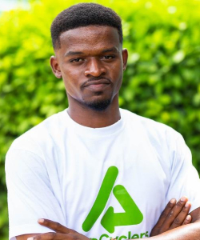
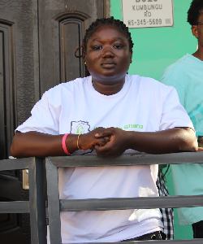
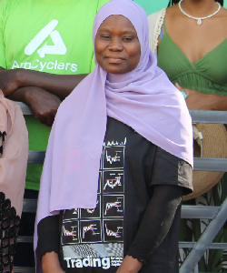

Building Zero Waste Africa through mission-driven community action, social protection, and digital innovation.
AppCycling Foundation is a Ghanaian non-governmental organisation (NGO) headquartered in Tamale, Northern Ghana. We are the impact and community arm of the AppCyclers social enterprise ecosystem, established to carry out the work that is driven by mission rather than margin.
We are a Zero Waste organisation — guided by the internationally recognised Zero Waste philosophy that all materials can and should be recovered, reused, or recycled, and that burning and landfilling represent a failure of system design, not an inevitable outcome. This philosophy runs through every programme we operate and every policy position we hold.
We work at the intersection of environmental sustainability, social protection, and digital innovation. Our programmes focus on the communities most affected by the growing global e-waste and plastic waste crisis — particularly informal waste workers, women, and young people in underserved regions of Ghana and across Africa.
The Foundation operates six core programme areas, anchored by our flagship — the Northern Ghana Plastic Waste Reboot Initiative (NGPWRI) — which is active and funded with support from TRANSFORM, a joint initiative of Unilever, the UK Government's FCDO, and EY.
Zero Waste is the overarching philosophy and the North Star of everything AppCycling Foundation does. It is not a marketing term. It is a globally recognised framework with its own standards, certifying bodies, and international movement.
"The conservation of all resources by means of responsible production, consumption, reuse, and recovery of products, packaging, and materials without burning and with no discharges to land, water, or air that threaten the environment or human health."
The internationally accepted benchmark for Zero Waste is 90% or above diversion of all waste away from landfill, incineration, and the open environment. AppCycling Foundation adopts this standard and commits to working toward it across all communities and cities we serve.
We do not design programmes to manage waste better. We design them to eliminate the conditions that create waste in the first place — through education, policy, and circular systems.
Zero Waste is a direction, not yet a destination. We are transparent that no community has reached zero — but every decision we make moves us toward it.
We oppose incineration and open burning as waste management solutions. We advocate for producer responsibility, product redesign, and material recovery as the only sustainable alternatives.
Zero Waste works when communities participate. Our education and behaviour change programmes build the household and market-level habits that make Zero Waste systems viable.
All Foundation programmes are designed according to the Zero Waste Hierarchy — a framework that prioritises actions from most to least preferred:
AppCycling Foundation is committed to working with the Tamale Metropolitan Assembly and community stakeholders to establish Tamale as Ghana's first Zero Waste City — a model for urban waste transformation across Africa. We will support the development of a Zero Waste City Roadmap, pursue UN-Habitat Zero Waste Cities framework alignment, and document the Tamale model for replication across the continent.
Men, women, and young people who collect, sort, and process e-waste and plastic waste — providing PPE, fair pay, and legal recognition at the centre of zero waste systems.
The majority of informal plastic waste collectors in Northern Ghana, focusing on their economic empowerment, workplace safety, and leadership.
Young people aged 18–35 in underserved communities seeking skills, tools, and livelihoods in the growing circular economy.
Families whose health and environment are directly impacted by open waste burning, driving zero waste habits at the household level.
The dedicated team driving sustainable change and zero waste innovation across Northern Ghana.



AppCycling Foundation and AppCyclers are distinct legal entities with separate bank accounts, governance boards, and financial reporting. Their relationship is governed by a written Related Party Transaction Policy.
The Foundation refers trained, registered waste workers to the AppCyclers marketplace, while AppCyclers shares technology infrastructure and operational data under a documented cost-sharing agreement.
Providing strategic oversight, fiduciary accountability, and mission continuity:
| Role | Background & Focus |
|---|---|
| Board Chair | Founder and CEO of AppCyclers — holding strategic vision and mission continuity. |
| Independent Treasurer | Finance or accounting professional providing independent oversight of accounts, audit, and donor compliance. |
| Independent Trustee | Legal and NGO governance background ensuring compliance with Ghanaian law and international requirements. |
| Community Representative | Elected from waste worker communities to ground governance in lived experience and worker voice. |
| Zero Waste Trustee | Environmental science or Zero Waste practitioner providing technical credibility to programme design. |
Day-to-day operations are led by operational management and programme leads:
Overall operations, donor relations, government engagement, and zero waste strategy leadership.
Dedicated leads across Waste & Environment, Zero Waste Communities, Policy & Research, and Youth & Women skills.
Managing accounts, donor reporting, audit coordination, and related-party transaction oversight.
Data collection, impact reporting, and measuring progress against zero waste diversion metrics.